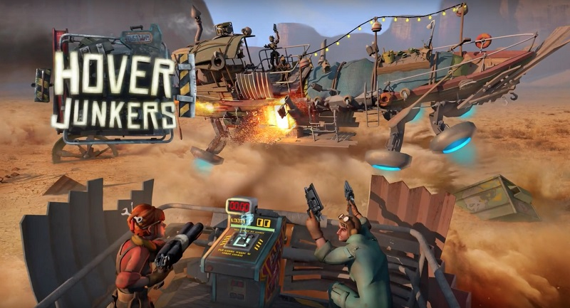

HTC Vive 到手，我也好好体验了一把沉浸式虚拟现实，的确震撼，尽管目前好的内容还不是很多。真的世界变了，不提游戏，很多经验的教学，难以实作的实验，在沉浸式虚拟现实中都将被改写，人类获取另类的知识体系将变容易。体验，免除危险的体验模式，从未来迎面而来。我还是先讲述自己的个人体验感受，最后再说下虚拟现实以及相关技术分析。
虚拟现实
虚拟现实（Virtual Reality），又称虚拟实境，简单来说就是用电脑模拟一个虚拟世界，让人感觉自己完全置身于这个虚拟的世界当中，从而忘掉自己所处的真实世界。目前主要是通过对人的眼睛和耳朵的欺骗，以及附加在头盔上的传感器来实现VR。
尽管离《黑客帝国》描述的场景距离还相当长远，但至少目前已经可以让人产生身在虚拟世界的幻觉了。尽管依然存在这样那样的不足:
- 纱窗效应，因为屏幕离眼睛的距离近，所以可以看到点阵，但是可以忍受。
- vive 和 rift 的单眼屏幕分辨率为: 1080 x 1200, 90HZ的刷新率，110度的视场。
- psvr 的单眼屏幕分辨率为: 960 x 1080, 120hz刷新率。
- 如果没有近视的人，那么看久了眼睛会难受，毕竟屏幕放得太近了，当然可以调整镜片的距离（牺牲视场）
- 好处是，如果有轻度近视，那么不需要带眼镜也可以玩，如果一定要带眼镜，那么尽量选择度数浅些的眼镜
- 线缆一不留意就会缠住自己【Vive的房间模式】
- 如果在虚拟世界中身体处于运动状态，但是实际身体并没有运动下，会导致眩晕，尤其是在没有任何理由的情况下，出现场景移动或者漂移。
体验
当置身于场景进行互动的时候，你会很快忘记视野前的栅格，进入一个个风格迥异的异世界。
Hover Junkers
首先值得一说的就是{《Hover Junkers》}，这是一款联机多人枪战的游戏，主要是驾驶气垫船分队互相射击。也可能是有史以来第一个VR多人竞技射击游戏。直译为：漂浮掠夺客。目前还处于EA(Early Access)状态。
- 好玩性: 高
- 眩晕度: 轻微

玩家是在一辆漂浮的战车上游戏,游戏刚开始在休息室选择自己的角色,随后便会加载到战车上,在战车上他们可以随意走动,
也可以用手拿起左轮手枪、猎枪或其他枪支瞄准射击。玩家也可以驾驶他们的战车驰骋在大战场上,也可以捡起地上的木板、铁块碎屑装备在战车边上的凹槽位。游戏的中心环绕在掠夺四周的货物，这些货物可以拿来创造自己船上的掩蔽物，也可以换作游戏积分。当你遇到另一个竞争玩家时，迟早枪战就要跟着发生。当然你可以选择对战或是逃跑，甚至可以试着跟他们交换物资。
不过，我们几乎大部分人都是将其作为枪战射击的开玩，很少关注四周货物，只要发现有船，追靠近就射击，还有人甚至不关心分队，自己队的照打无误，不过这也和没有明显的分队标识有关系(v1.0.6已经好多了)，但是要有人，凑个8个人，节奏就很紧张了，尤其是两人配合在一条船上。没有人的话，就没法玩了，目前还没有bot,只能和人打，有机器人的bot版本得等到 v1.1。加入同一team的人会在休息室里，不过其他人，只能看到一双手套和一副眼镜。如果不了解的人，还以为是手套眼镜乱飞，可以直接语音。
驾驶船只以及枪支的设计都充分的利用到了HTC Vive控制器的特性。
身临其境驾船
http://www.bilibili.com/video/av3960772/
《The Lab》
最后想说的是: Valve 的 《The Lab》。
关键技术
虚拟现实（Virtual Reality），又称虚拟实境，利用电脑模拟产生一个3D空间的虚拟世界，提供用户关于视觉等感官的模拟，让用户如同身历其境一般，可以及时、没有限制地观察3D空间内的事物。虚拟世界的空间位置会随用户的移动而移动，低头看地，抬头看天，都会响应变化。
早在1935年Stanley G. Weinbaum的短篇科幻小说《Pygmalion’s Spectacles》描述了包括嗅觉、触觉和全息护目镜为基础的虚拟现实系统。
目前的虚拟现实眼镜主要使用到的关键技术如下：
- 立体视觉(Stereopsis):使用正常的双眼看东西的时候，我们感觉到的物体是有深度和距离的。以前的显示头盔均可做到，但是他们是通过透镜让人感觉是5米开外的200寸的大屏。而VR头盔做的是相反，尽量让
- 头部跟踪(Head track):对六自由度的头部运动进行跟踪反馈。早在2001年用于头部运动跟踪(6DOF)的TrackIR就是先驱，多用于飞行驾驶游戏，有超过100多个游戏支持。
- 室内定位(走动):
- 惯性定位: 加速度+磁力计+陀螺仪（有漂移，据说放在脚部效果最好，3‰的精度，也就是走1km误差累计3m）
- 基站定位:
- 无线信号基站(Nanotron,DecaWave)：至少需要三个基站(5-10cm精度，无漂移)。
- 激光扫描定位(Lighthouse): HTC Vive采用，两颗激光发射器安置房间对角，激光束由发射器里面的两排固定LED灯发出，每秒6次。每个激光发射器内设计有两个扫描模块，分别在水平和垂直方向轮流对定位空间发射横竖激光扫描15×15英尺的定位空间。头盔和手柄上有超过70个光敏传感器。激光扫过的同时，头盔开始计数，传感器接收到激光后，利用传感器位置和接收激光时间的关系，计算相对于激光发射器的准确位置。同一时间内激光束击中的光敏传感器足够多，就能形成一个3D的模型。不仅能探测出头盔和手柄的位置，还可以捕捉到头盔和手柄的方向。